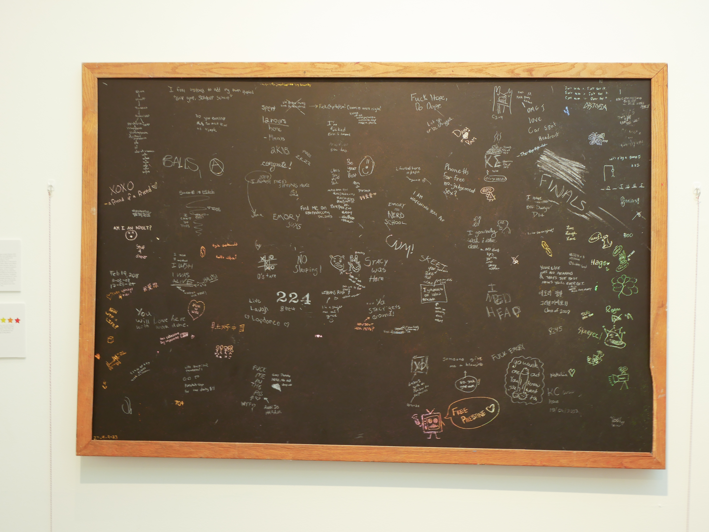
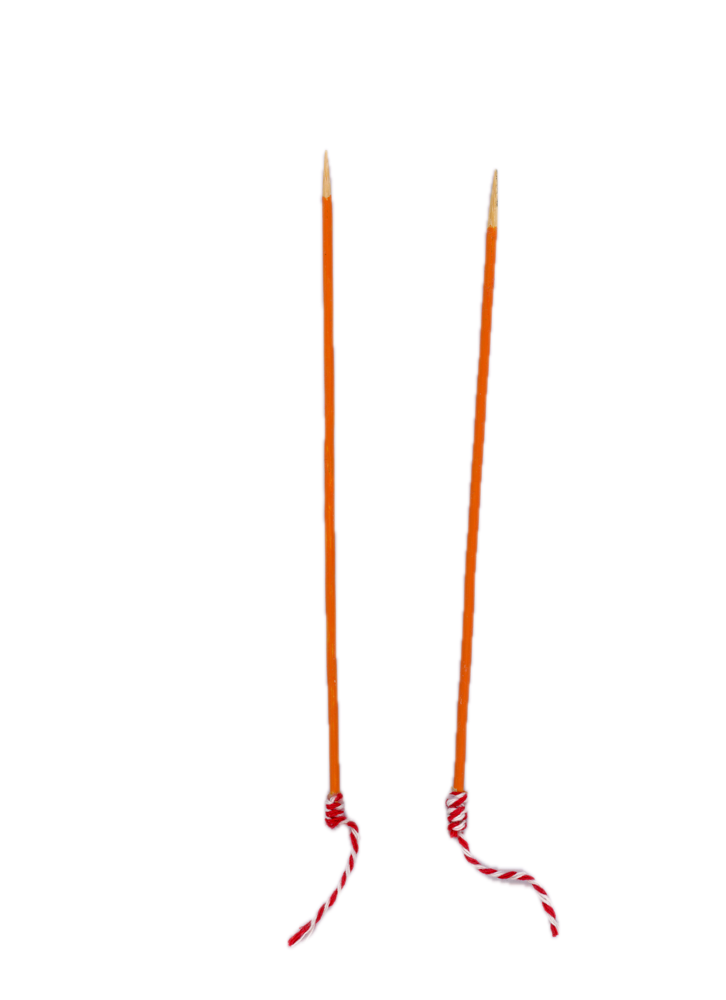
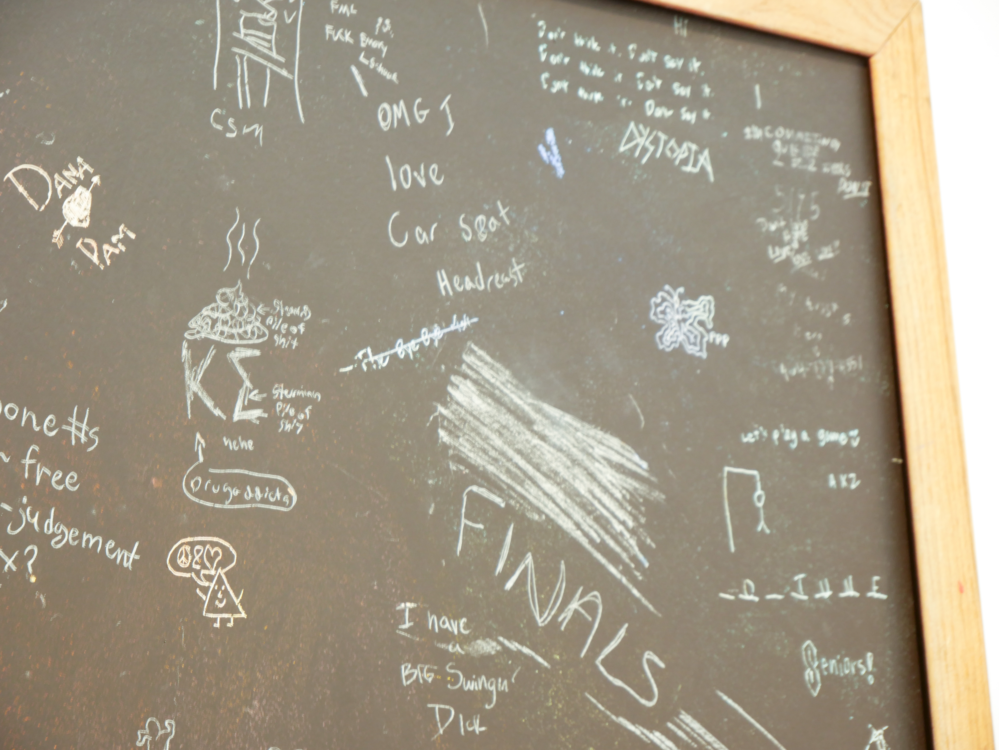
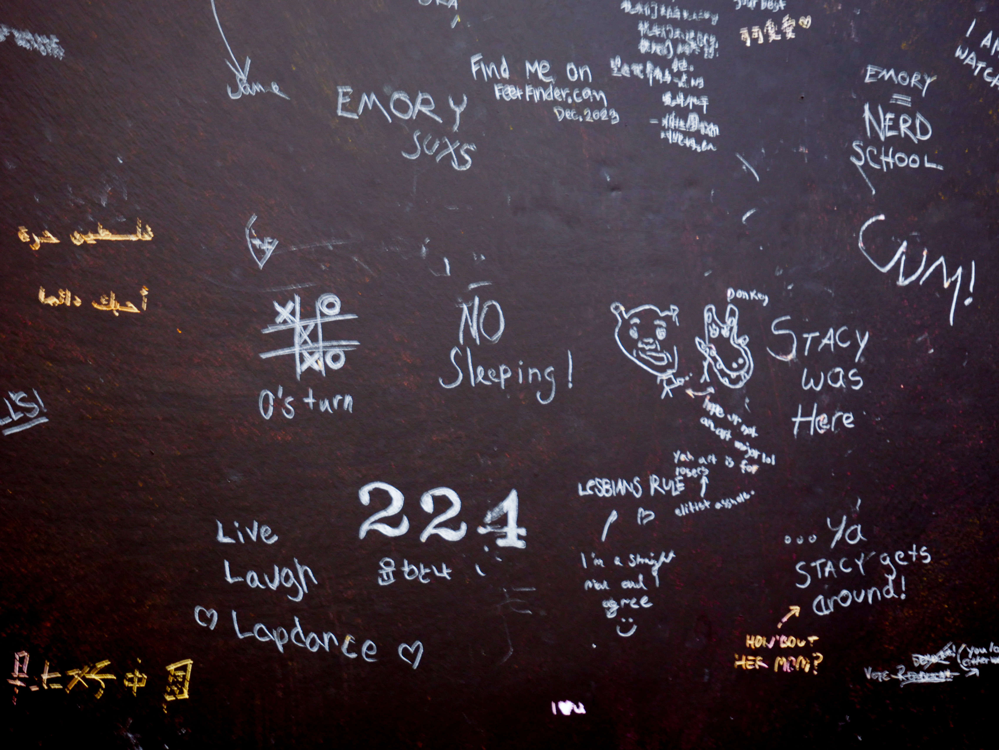

Open Expression: Interacting with Student Graffiti
Klara Nitsche, Advised by Dana Huagaard | Emory University, 2024
Materiality · Handwriting
Open Expression is an interactive art installation that replicates school graffiti on a scratch-off blackboard, offering audience members the choice to retrace, remove, or add their own message to the board.
I collected samples of graffiti written in Emory's Woodruff Library Stacks, which were then digitized and assembled to to create a singular composition of sentiments from students past. I found a discarded chalkboard frame and cut a sheet of foam board to make a lightweight, fake blackboard. I turned it into a large-scale scratch-off surface by scribbling crayons over the foam board and then coating it in chalkboard paint. I taped transfer paper over the whole surface and projected the graffiti composition over it, carefully tracing each inscription so that each phrase would be written in a unified white chalk but still retain most properties of the original handwriting style.

Sharpened sticks painted like pencils hung from the wall, and audience members were invited to take them in hand and engage with the board through adding their own work, re-inscribing a message from the past, or wiping away the chalk. The colorful wax underlayer was revealed with every new etching, creating a visual distinction between graffiti of the past and present.

